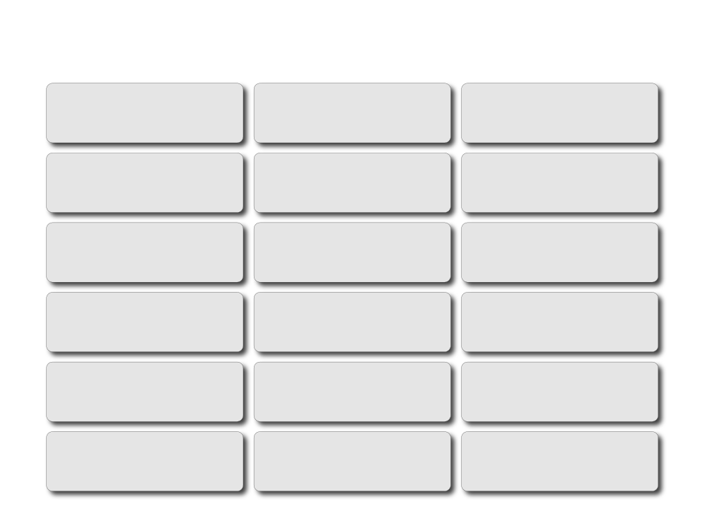

Artist Statement Sections
Section
Purpose
Prompt
Encounterwhat is here?
A statement about what the work is — what is the viewer meeting?
What will the audience first notice or understand about the work?
Intentionwhat is it doing?
A statement about what the work is trying to do — what question, concern, or impulse began the work?
What were you trying to investigate, express, test, or understand?
Processhow did it become this?
An insight into how the work was made — how does its materiality matter?
What materials, methods, experiments, or decisions shaped the work?
Contextwhere does it sit?
A statement about where it is situated — what does it connect to, or what spaces or ideas does it emerge from?
Does it relate to place, memory, research, culture, other artists, or broader themes or issues?
Reflectionwhat does it open up?
An insight into reading or engaging with the work — what can the viewer take away from the encounter?
What changed through the process of making the work? What might the audience notice, feel, question, or carry away?